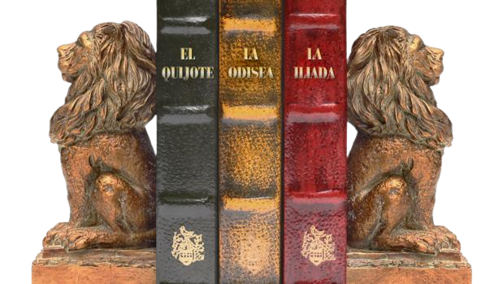
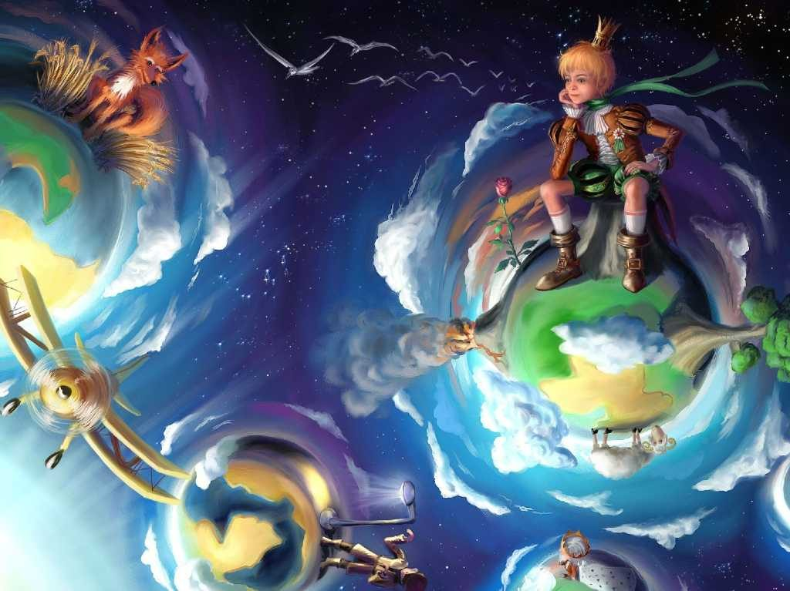

¿Qué es Literatura? La literatura es el arte de la expresión verbal abarca tanto textos
escritos como hablados o cantados. ¿Qué es Universal? Universal quiere decir que pertenece o
se extiende a todo el mundo, a todos los países, a todos los tiempos.
Desarrollo
¿Qué es la literatura universal? La literatura universal es el estudio de las culturas y el
arte de redacción de éstas. ¿Cómo se desarrollan? Según las civilizaciones se han
desarrollado por el paso de los años, sus sistemas de comunicación escrita y oral han
florecido. Los principales libros que distinguen a la literatura universal son: "La Divina
Comedia"(Época del Renacimiento), "El principito"(Época del Romanticismo), "Don
Quijote"(Época del Barroco), "El Señor de los Anillos (La Comunidad del Anillo)"(Época del
Romanticismo).
¿Qué caracteriza a la literatura universal? 1-Originalidad (El lenguaje debe ser inédito).
2-Voluntad Artística (Se crea intentando hacer una obra de arte). 3-Intención Comunicativa
(Se usa lenguaje abierto a la evocación, a la sugerencia a través de los significados
secundarios de las palabras). 4-Mundo Propio (El mensaje crea sus propios mundos de ficción,
es decir, no corresponde con la realidad exterior). 5-Tiene una Función Poética (El lenguaje
llama la atención por si mismo, al momento de expresar ideas). Etapas de la literatura
universal: 1-Clásica. 2-Época Medieval. 3-Renacimiento. 4-El Barroco. 5-Neocalsicismo.
6-Romanticismo. 7-Realismo. 8-Modernismo. 9-Vanguardismo. 10-Posmodernismo.
Motivación
Yo elegí este tema ya que es un tema que en el periodo pasado en las clases de español lo
estudiamos muy a fondo, y a mi me pareció un tema muy interesante, porque te explica cuál
era el modo antes de comunicarse con otras personas, y te explica sobre como era la
literatura en aquellas épocas.
Por eso yo creo que este tema tiene mucha información interesante y que puede enganchar al
lector muy fácilmente a este grandioso blog del proyecto PAE, y así que el lector pueda
estar mejor informado sobre la literatura y comunicación en épocas pasadas.
 Mejores obras de la literatura universal
Ranking
27/11/2021
Posmodernismo
Vanguardismo
Modernismo
Realismo
Romanticismo
Neoclasicismo
El Barroco
Renacimiento
Época Medieval
Clásica
Este ranking es una lista de los 10 movimientos literarios en la literatura universal, están
ordenados según sus fechas de creación, la primera fue la más antigua y la última la más
moderna.
Esta lista de sitios oficiales, es una lista donde se presentaran enlances con más
información sobre la literatura universal
 Una de las mejores obras de la literatura universal ("El Principito")
Movimientos Literarios
14/01/2022
Autor: Alvarez Mormeres J. Año: 2019.
En este video nos hablan de la mayoría de los movimientos literarios, entre ellos la
literatura antigua, medieval, renacentista, barroca, romántica, realista, modernista,
vanguardista y contemporánea.
En mi opinión este video explica muy bien cada movimiento literario a detalle, de los ya
antes mencionados, aunque le faltan algunos, de los cuales hablaremos más adelante.
Investigación
18/01/2022
Movimientos Literarios del 1-3
A lo largo de la historia, la literatura ha sufrido grandes cambios y transformaciones que
caracterizan a cada época y a cada cultura, por lo que se suele hablar de diferentes
movimientos literarios, con el objetivo de dar una clasificación general de las
distintas
etapas del desarrollo en la literatura.
Clásica: El clasicismo no es solo un movimiento literario, sino un
movimiento global que se
remonta al siglo V a.C., se caracteriza por la búsqueda constante de la perfección en los
aspectos físicos del ser humano. Este movimiento se centró principalmente en la antigua
Grecia y el Imperio Romano y se caracterizó por la búsqueda de la armonía y el equilibrio
entre la sustancia y la forma. Clásicos inolvidables son la Ilíada y La Odisea de Homero o
la Eneida de Virgilio.
Época Medieval: La Alta Edad Media es el período comprendido entre los
siglos V y X, y es
durante estos siglos que el movimiento literario de la Edad Media se considera el más
importante de ese período. Esto significa que las notas medievales se han estandarizado y,
aunque se han introducido nuevas características, se ha conservado la fuente general.
También hay que tener en cuenta que la mayoría de los movimientos literarios se originaron
en Europa y, aún después de muchos años, no llegaron a España.
Renacimiento: Uno de los movimientos culturales más importantes
reconocidos
internacionalmente es el Renacimiento. Nació en los siglos XV y XVII en
Italia, donde su
influencia se extendió por toda Europa. Este movimiento estuvo marcado por el auge del arte
y la centralidad del ser humano, lo que llevó a una nueva concepción del yo y del mundo.
Es una ruptura completa aunque gradual con la «oscuridad» del medievo, rompiendo
lo estructural para valorar el humanismo y el naturalismo. (espaciolibros.com. 22 de
octubre de 2021. MOVIMIENTOS LITERARIOS: CARACTERÍSTICAS Y AUTORES.)
Movimientos literarios del 4-7
El Barroco: El barroco fue un movimiento que nació en el siglo XVII y
continuó hasta
principios del siglo XVIII, según los países, y que muchos definen como una prolongación del
Renacimiento. Este movimiento surgió en un momento de muchas controversias religiosas y
políticas, ya que se amenazaban estados autoritarios contra la burguesía que comenzaba a dar
los primeros pasos hacia el capitalismo. Normalmente, se suele describir este
movimiento como una visión negativa del mundo debido a las diferentes crisis que se
estaban dando lugar a gran escala. (espaciolibros.com. 22 de
octubre de 2021. MOVIMIENTOS LITERARIOS: CARACTERÍSTICAS Y AUTORES.)
Comenzó en Europa occidental pero se extendió a diferentes partes de América Latina debido
al colonialismo.
Neoclasicismo: El movimiento surgido en el siglo XVIII marca una vuelta a
los valores
clásicos griegos o romanos, en busca del equilibrio y la serenidad.
Esto quiere decir que es un movimiento que rechaza los valores estéticos del pasado pero
tiene una fecha límite. El Neoclasicismo es el Siglo de las Luces, también conocido como La
Ilustración. Este movimiento literario se caracterizó por el culto a la razón, la creación
de la renuncia a la religión y el aumento del poder de la investigación científica, desde el
naturalismo hasta el desarrollo del mundo científico. Todo este movimiento tiene como
objetivo la búsqueda de la felicidad, que creen que solo se puede lograr a través de la
cultura.
Romanticismo: El romanticismo surgió en la primera mitad del siglo XIX y
generó oposición a
la Ilustración, prescindiendo de la razón en favor de la
emoción. No hay una descripción básica de este movimiento más allá de lo que se ha
mencionado porque en cada país la belleza, la naturaleza y la vida se experimentan de una
manera diferente. En este momento, el conocimiento comenzó a experimentar un gran auge en el
mundo literario, así como en la ficción biográfica, histórica y de terror. Al mismo tiempo,
también comenzó a crear novelas por entregas.
Realismo: El movimiento que definió la segunda mitad del siglo XIX y
asumió el enfoque de la
literatura para tratar la realidad social fue la decadencia
de las ideas románticas descrita anteriormente. Este movimiento se originó en Francia, la
interrupción de textos cercanos al lector para abordar cuestiones de su vida cotidiana o de
sus intereses, todo ello en un lenguaje común, accesible a todos los lectores. Por el
contrario, los escritores abandonan el enfoque de las historias románticas en favor del
análisis y la crítica, manteniendo una visión objetiva de lo que describen.
Movimientos literarios 8-10
Modernismo: El modernismo se define como un amplio movimiento literario y
artístico que
buscó un renacimiento creativo a finales del siglo XIX y
principios del XX. Internacionalmente, el Modernismo se conoce como Art Nouveau, su doctrina
en Francia, sin embargo, el estilo se caracteriza por la diversidad nacional, y en España se
han reducido algunos rasgos importantes de su desarrollo. Se caracteriza por un rechazo a la
historia académica de finales del siglo XIX, así como por un deseo de introducir el arte en
todos los aspectos de la vida. Sienten que hay una especial tendencia hacia la línea y sus
valores expresivos, y le añaden una cierta tendencia a la abstracción.
Vanguardismo: Aparecieron en la primera mitad del siglo 20. Los grupos de
vanguardia
surgieron como un intento de cambiar la literatura, negando el pasado
y primando la originalidad sobre la realidad. Podría decirse que es una ruptura
con todo lo anterior para primar la búsqueda de lo genuino. (espaciolibros.com. 22
de octubre de 2021. MOVIMIENTOS LITERARIOS: CARACTERÍSTICAS Y AUTORES.)
. La parte poética modifica la estructura de los poemas para crear una escala
inesperada e inédita. Utilizan diversas fuentes de expresión, desde imágenes hasta el uso de
metáforas y rompen las formalidades del verso, con lógica, para dejarse llevar por la
casualidad.
Posmodernismo: Es una corriente intelectual que busca trascender la
modernidad y crear una comprensión diferente del mundo y la
realidad que nos rodea. Algunos autores la consideran todo lo contrario a la modernidad.
Otros entendieron que era una evolución del movimiento anterior. El posmodernismo también
nació del vientre de una crisis global, cuando se abandonó la creencia en una utopía y un
futuro mejor.
Extra-Posvanguardismo: El movimiento surge a mediados del siglo XX estuvo
influenciado por las teorías marxistas que rechazaban el
idealismo de vanguardia y buscaban un retorno a la realidad. Uno de los elementos más
llamativos es que la estética ya no es exagerada y todo el peso recae en el contenido. Por
tanto, el contenido de la poesía posvanguardista es un intento de cambiar la realidad,
instar a la acción, y el tema de sus versos es la propia vida cotidiana.
 Ranking
Ranking  Sitios Oficiales
Sitios Oficiales  Investigación
Investigación